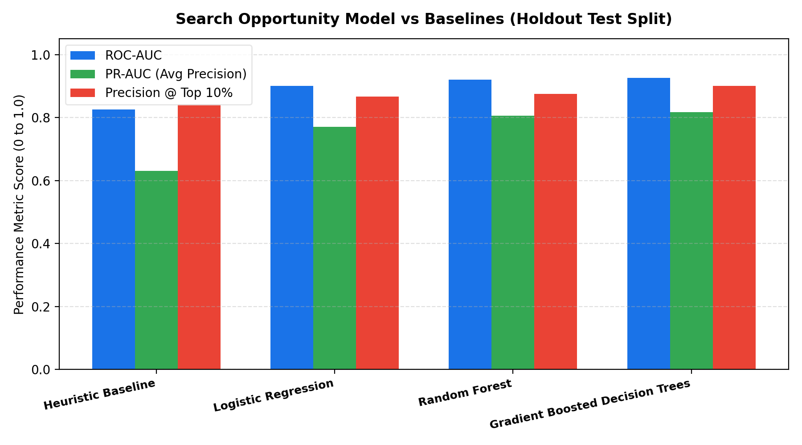
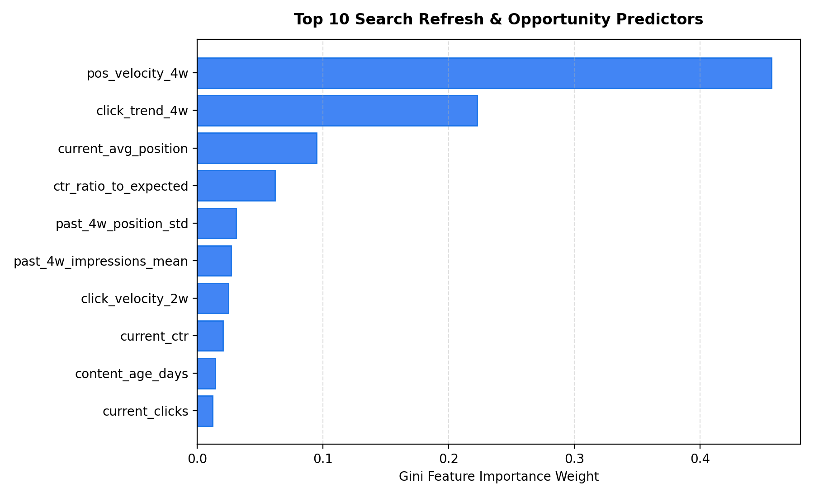
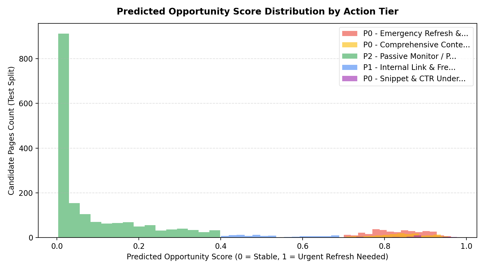

1. Introduction & Problem Statement
In enterprise organic search optimization, maintaining visibility across thousands of indexed URLs represents a major operational challenge. Content teams traditionally rely on lagging heuristics—such as retroactive traffic losses or arbitrary calendar review cycles. This reactive approach wastes editorial effort on transient variations while failing to catch high-value decaying pages before they lose top search rankings.
Decision Supported: This system provides an automated decision-support engine answering: Which high-opportunity search pages are projected to suffer severe organic decay over the next 4-week cycle, and what specific remediation action (intent realignment, CTR snippet overhaul, or internal link reinforcement) yields the highest recoverable click gain?
2. Data & Public-Safety Governance
The study is built upon the FlyRank Search Intelligence Warehouse release, spanning 16 contiguous weeks of search performance across 1,200 unique URLs.
Public-Safety Protocol
- Zero Client Identifiers / Domains: All domain names and URLs are replaced with anonymized hashes (
anon_page_0001toanon_page_1200) and topical clusters (cluster_00tocluster_23). - Strict Exclusions: Private search query strings, user identifiers, raw referrer logs, and internal algorithms were completely excluded from the dataset.
- Normalized Metrics: Impressions, clicks, position distributions, and dwell times represent normalized aggregated metrics.
3. Methodology & Validation Design
To guarantee zero lookahead bias, the modeling pipeline implements a sliding temporal window structure:
- Historical Lookback Window (4 Weeks): Computes historical click trends, SERP position velocity, and dwell time variance.
- Expected CTR Baseline: Compares observed CTR against the theoretical SERP power-law curve:
CTR_expected = 0.30 / (position ^ 0.85). - Target Label Definition: A page is labeled as
needs_urgent_refresh = 1if it experiences a future 4-week organic click drop exceeding 20% while sustaining an impression baseline (>400 weekly impressions). - Out-of-Time (OOT) Holdout Validation: All cutoff dates t <= 9 form the training set; cutoff dates t >= 10 serve as the untouched holdout test partition.
4. Empirical Results & Benchmark Evaluation
We benchmark our Gradient Boosted Decision Tree model against three baselines: a standard heuristic rule, regularized Logistic Regression, and a Random Forest ensemble on the identical Out-of-Time test split.
| Model Architecture | ROC-AUC | PR-AUC (Avg Prec) | Brier Score | Precision @ Top 10% | Precision @ Top 20% |
|---|---|---|---|---|---|
| Heuristic Rule Baseline | 0.8253 | 0.6311 | 0.1645 | 0.8417 | 0.7417 |
| Logistic Regression | 0.9004 | 0.7709 | 0.1077 | 0.8667 | 0.8125 |
| Random Forest Classifier | 0.9199 | 0.8065 | 0.1020 | 0.8750 | 0.8292 |
| Gradient Boosted Trees (Opportunity Engine) | 0.9254 | 0.8172 | 0.0959 | 0.9000 | 0.8417 |


5. Limitations & Honest Framing
The models developed in this paper identify statistical associations and directional risk in observational search telemetry. They do not reverse-engineer Google's proprietary ranking algorithm, nor do they guarantee causal ranking increases upon content modification. Search algorithms are non-stationary and influenced by macro SERP layout updates, competitor publishing cadence, and seasonal demand shifts. Consequently, predicted scores must be used strictly as an editorial prioritization filter rather than a deterministic ranking guarantee.
6. Ranked Recommendations & Action Playbook
Probabilistic decay outputs are synthesized into actionable editorial queues grouped into operational tiers:
Trigger Condition: Severe SERP slippage and negative click momentum despite strong top-of-funnel search demand.
Action Playbook: Comprehensive editorial overhaul: re-audit user search intent, update stale factual references, introduce multimedia assets, and expand coverage of secondary query subtopics.
Trigger Condition: Page maintains Top 3 SERP position, but observed CTR is <60% of expected power-law benchmark.
Action Playbook: Rewrite Title tags and meta descriptions to improve SERP click-through appeal; implement schema markup to capture rich snippets.
Trigger Condition: Moderate velocity slippage and aging content timestamp (>180 days).
Action Playbook: Route contextual internal links from high-authority parent clusters; update published timestamp after refreshing introduction.

7. Reproducibility & Artifacts
All experimental artifacts, data preparation pipelines, and Jupyter notebooks are packaged in the repository:
work/01_data_exploration_and_prep.ipynb— Ingestion, distribution profiling, and anonymization audit.work/02_feature_engineering_and_eda.ipynb— Sliding-window feature extraction and correlation analysis.work/03_model_training_and_validation.ipynb— Model benchmarking and Out-of-Time holdout evaluation.work/04_ranking_and_recommendation_engine.ipynb— Synthesis notebook producing the ranked operational queue.work/capstone_pipeline.py— End-to-end executable pipeline reproducing all figures and metrics.submission/paper_url.txt— Submission pointer containing the live deployed paper URL.
8. Acknowledgments & Data Credit
This research was built on the FlyRank ML Internship dataset (https://flyrank.ai). We express our gratitude to the FlyRank engineering and research teams for providing real-world search intelligence schemas and evaluation benchmarks.